Connecting a Codio Box to a GitHub Repo¶
The first step to using GitHub in Codio is connecting your Codio and GitHub accounts. You only have to do this once. Follow these steps:
Click your user name in the bottom left of the main menu.
Click the Applications tab.
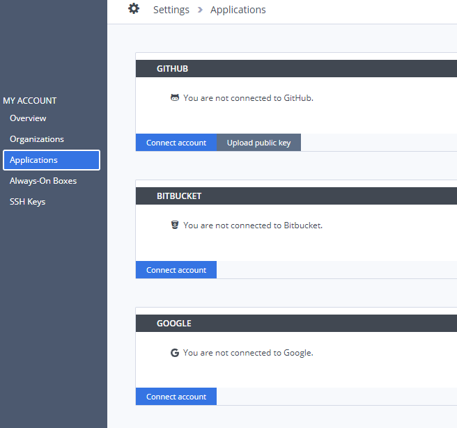
In the GitHub section, click Connect account and log in to your Github account when prompted.
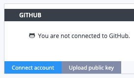
If you are using SSH connections, click Upload public key so Codio and Github can exchange keys.
In GitHub: Make a new repo¶
Each Codio box (Assignment, Book, or Project) can be mapped to a GitHub repo. This connection only needs to be established once per box.
Note
If you have an existing repo you want to clone, you can import a project from a GitHub repo and this connection is made during the importing process. If you are familiar with Git, skip the rest of this guide and just use the terminal as usual by going to Tools > Terminal.
To create a new repo, follow these steps:
Go to your GitHub organization (or profile) and click the green New repository button.
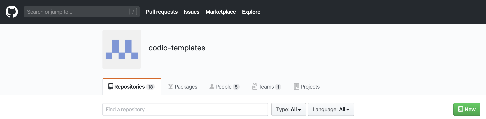
Complete the requested details. We suggest not initializing a README since one already exists in Codio and will result in an immediate conflict.
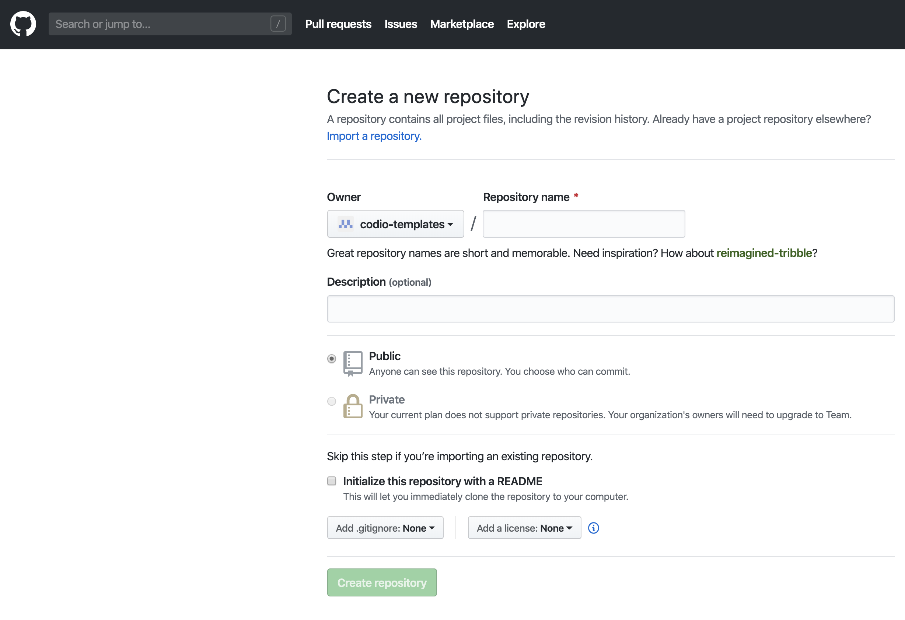
Copy either the HTTP or SSH URL on the created repo page (if you do not want to type credentials and you uploaded your public key, use SSH).
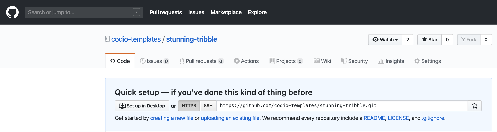
In Codio: Connect to repo¶
Note
You can skip the rest of this guide and do your normal Git workflow via command line if you prefer. Open a terminal from Tools > Terminal on the menu.
To connect to your repo from Codio, follow these steps:
On the Codio Box you want to connect, click the Tools > Git > Remotes menu.
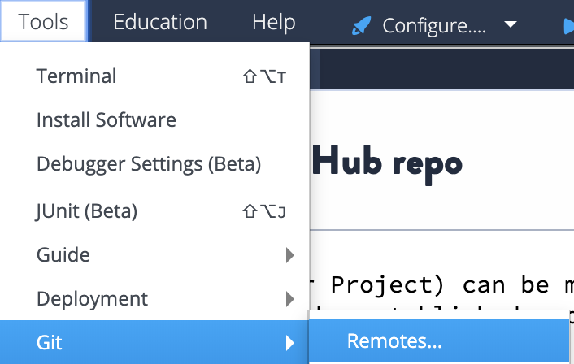
When prompted, click Yes to initialize a local git repository.
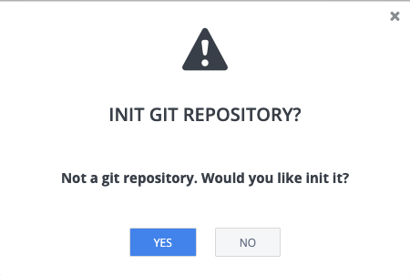
When prompted, click Add Remote.
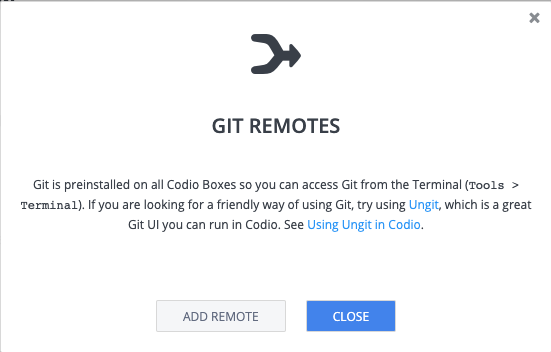
Enter the name (origin is the git standard) and paste the URL that you copied into the URL field.
Click Save and then Close.
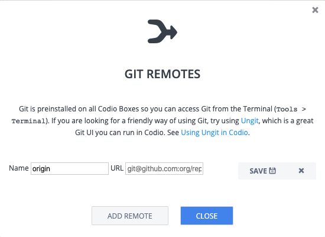
Click Tools > Terminal on the menu to open a terminal window.
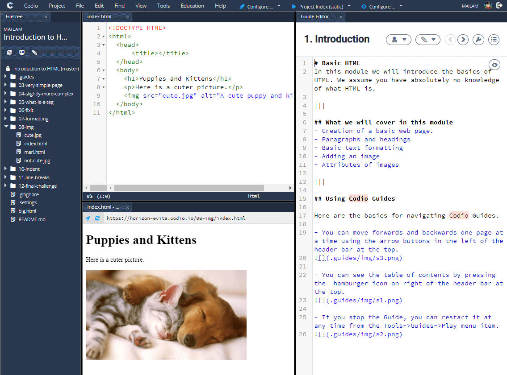
Type git add . and press Enter/Return.
Type git commit -m “initial commit” and press Enter/Return.
Type git push –set-upstream origin master and press Enter/Return.
Collaboration in Codio with GitHub¶
If you share Codio boxes with other members of your GitHub repository (directly through Project > Permissions or a copy through Project > Fork), the connection to GitHub is maintained. However, other members must also link their GitHub and Codio accounts.
Saving your work with Git (Committing and Pushing)¶
Git allows you to save multiple versions of your work using a few commands in the terminal (Tools > Terminal).
Follow these steps to save your work:
In the terminal window, type git add . and press Enter/Return. This command tells git to go collect all the changes you have made since your last save (which is called a commit in Git).
Type git commit -m “commit message” and press Enter/Return. This command bundles all your changes and gives them a useful human-readable name so make sure you provide something useful for the Commit Message.
Type git push and press Enter/Return. This command sends this bundle of changes to GitHub so you have a copy in the cloud.
Going back to immediately previous save point (Reverting to previous commit)¶
To get rid of all changes since your last save or commit, follow these steps: Warning: Be careful, you cannot undo this!
First, check what your last commit or save was to make sure you know where you are going back to. You can either look on GitHub or type git log. If you have a lot of commits, you will need to type Ctrl+c to exit git log.
Type git add . && git reset –hard HEAD.
Manually importing a Git repo into Codio¶
To manually import a Git repo into Codio, follow these steps:
In GitHub, click the Clone URL link in the right pane and copy to the clipboard.

If you are cloning using SSH, you must have already added the Codio SSH public key as described in Upload SSH Key to Remote Server.
Log in to Codio and click New Project.
Click the Click here link for more options.

In the Select your Starting Point area, click Import.
From the Source drop-down list, choose Git.
Paste the Git URL into the URL field and add details about the project.
Click Create. Codio loads the repo and displays it.
Disconnect Codio from a GitHub Account¶
Follow the steps below to disconnect your GitHub account:
Click your username in the bottom-left corner of the main menu.
Click the Applications tab.
In the GitHub section, click Remove connection to disconnect your GitHub account from Codio.
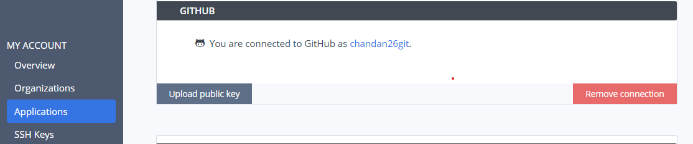
A Remove connection confirmation screen will appear (please don’t close this screen until you complete the process)
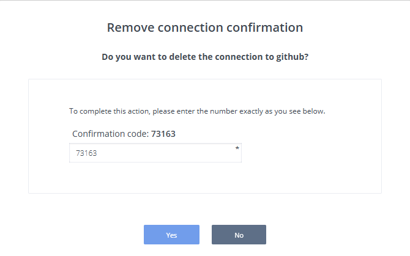
Enter the confirmation code provided and click Yes to disconnect your Codio account from the GitHub account.
Note
When disconnecting your GitHub account or repository, note that this action does not remove the associated SSH key from the original repository. If you wish to revoke access, you will need to remove the SSH key manually in the repository settings on GitHub. However, you can leave the key in place if you plan to work with the original GitHub account again in the future.
More Information¶
Refer to the documentation on GitHub.com and http://git-scm.com/docs for complete information about using Git and GitHub.